🧠 卷积神经网络（CNN）的定义
卷积神经网络（Convolutional Neural Networks，CNN）是一类专门用于处理具有网格状拓扑结构数据（如图像）的深度学习模型。CNN 是计算机视觉任务（如图像分类、目标检测和分割）的核心技术。它们的设计灵感来自于生物学中的视觉系统，旨在模拟人类视觉处理的方式。在过去的几年中，CNN 已经在图像识别、目标检测、图像生成和许多其他领域取得了显著的进展，成为了计算机视觉和深度学习研究的重要组成部分。
🔄 什么是卷积
在卷积神经网络中，卷积操作是指将一个可移动的小窗口（称为数据窗口）与图像进行逐元素相乘然后相加的操作。这个小窗口其实是一组固定的权重，它可以被看作是一个特定的滤波器（filter）或卷积核。这个操作的名称"卷积"，源自于这种元素级相乘和求和的过程。简而言之，卷积操作就是用一个可移动的小窗口来提取图像中的特征，这个小窗口包含了一组特定的权重，通过与图像的不同位置进行卷积操作，网络能够学习并捕捉到不同特征的信息。每次滑动算一个值，组成新的矩阵，叫特征图（feature map）。
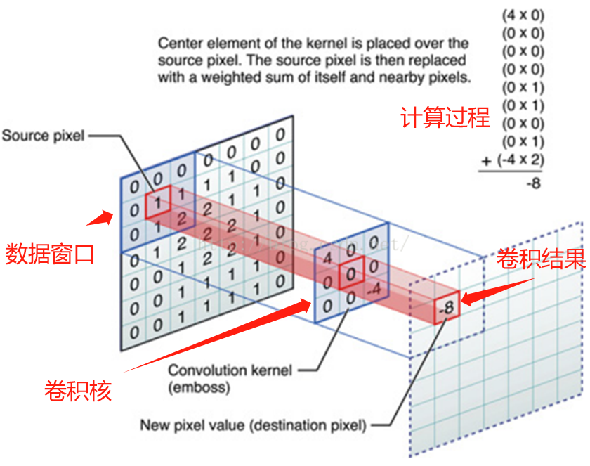
🏗️ 网络结构

一个卷积神经网络主要:以下 5 层组成：
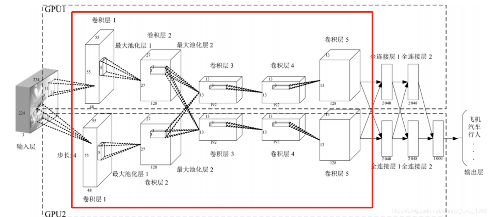
📥 输入层
输入层主要接收原始图像数据，图像通常被表示为一个三维数组，其中两个维度代表图像的宽度和高度，第三个维度代表颜色通道（例如，RGB 图像有三个通道）。
- 去均值：把输入数据各个维度都中心化为 0，如下图所示，其目的就是把样本的中心拉回到坐标系原点上。
- 归一化：幅度归一化到同样的范围，如下所示，即减少各维度数据取值范围的差异而带来的干扰，比如，我们有两个维度的特征 A 和 B，A 范围是 0 到 10，而 B 范围是 0 到 10000，如果直接使用这两个特征是有问题的，好的做法就是归一化，即 A 和 B 的数据都变为 0 到 1 的范围。
- PCA / 白化：用 PCA 降维；白化是对数据各个特征轴上的幅度归一化
⚙️ 卷积计算层
卷积层将输入图像与卷积核进行卷积操作，用卷积核提取局部特征，如边缘、纹理等。应用一组可学习的滤波器（或卷积核）在输入图像上进行卷积操作，以提取局部特征。每个滤波器在输入图像上滑动，生成一个特征图（Feature Map），表示滤波器在不同位置的激活。卷积层可以有多个滤波器，每个滤波器生成一个特征图，所有特征图组成一个特征图集合。
在这个卷积层，有两个关键操作：
- 局部关联：每个神经元看做一个滤波器（filter）
- 窗口（receptive field）滑动：filter 对局部数据计算
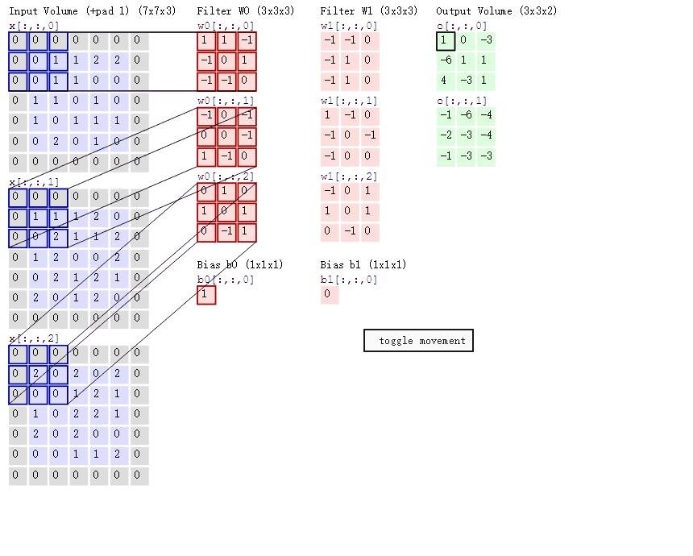
在此之前，想象一个场景：当你把 $5 \times 5 \times 3$ 的过滤器用在 $32 \times 32 \times 3$ 的输入上时，会发生什么？输出的大小会是 $28 \times 28 \times 3$。注意，这里空间维度减小了。如果我们继续用卷积层，尺寸减小的速度就会超过我们的期望。在网络的早期层中，我们想要尽可能多地保留原始输入内容的信息，这样我们就能提取出那些低层的特征。比如说我们想要应用同样的卷积层，但又想让输出量维持为 $32 \times 32 \times 3$。为做到这点，我们可以对这个层应用大小为 2 的零填充（zero padding）。零填充在输入内容的边界周围补充零。如果我们用两个零填充，就会得到一个 $36 \times 36 \times 3$ 的输入卷。
如果你的步幅为 1，而且把零填充设置为
$$ \text{Zero Padding} = \frac{K - 1}{2} $$$K$ 是过滤器尺寸，那么输入和输出内容就总能保持一致的空间维度。
计算任意给定卷积层的输出的大小的公式是
$$ O = \left\lfloor \frac{W - K + 2P}{S} \right\rfloor + 1 $$其中 $O$ 是输出尺寸，$W$ 是输入尺寸，$K$ 是过滤器尺寸，$P$ 是填充，$S$ 是步幅。
关键参数：
- 卷积核大小：常见 $3 \times 3$、$5 \times 5$。
- 步幅（stride）：卷积核滑动步长，步幅 = 1 每次滑一格，步幅 = 2 每次滑两格。
- 填充（padding）：图片边缘加 0，保持输出尺寸。比如"same"填充让输出尺寸跟输入一样。
- 通道数：RGB 图有 3 通道，卷积核也得是 3 通道，输出特征图通道数由卷积核个数决定。
- 深度：神经元的个数
⚡ 激活层
激活层通常在卷积层之后，应用非线性激活函数，如 ReLU（Rectified Linear Unit），以引入非线性特性，使网络能够学习更复杂的模式。
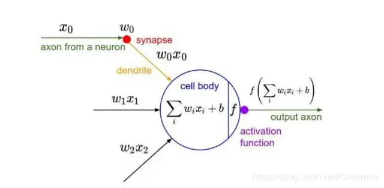
CNN 采用的激活函数一般为 ReLU（The Rectified Linear Unit / 修正线性单元），它的特点是收敛快，求梯度简单，但较脆弱，图像如下。
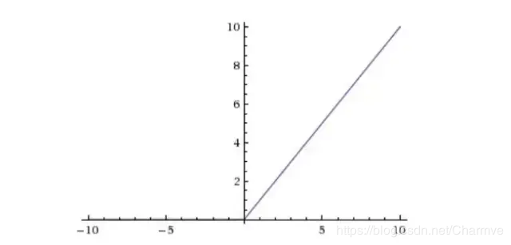
常用激活函数：
-
ReLU（Rectified Linear Unit）：$f(x) = \max(0, x)$，负数变 0，正数不变。简单、快，还能避免梯度消失。
输入：-2，0，3，-1 ReLU 输出：0，0，3，0
-
Sigmoid：把值压到 $0 \sim 1$，适合二分类，但容易梯度消失。
-
Tanh：把值压到 $-1 \sim 1$，效果比 Sigmoid 好点。
📊 池化层
池化层夹在连续的卷积层中间，用于压缩数据和参数的量，减小过拟合。简而言之，如果输入是图像的话，那么池化层的最主要作用就是压缩图像。用于降低特征图的空间维度，减少计算量和参数数量，同时保留最重要的特征信息。
- 特征不变性：也就是我们在图像处理中经常提到的特征的尺度不变性，池化操作就是图像的 resize，平时一张狗的图像被缩小了一倍我们还能认出这是一张狗的照片，这说明这张图像中仍保留着狗最重要的特征，我们一看就能判断图像中画的是一只狗，图像压缩时去掉的信息只是一些无关紧要的信息，而留下的信息则是具有尺度不变性的特征，是最能表达图像的特征。
- 特征降维：我们知道一幅图像含有的信息是很大的，特征也很多，但是有些信息对于我们做图像任务时没有太多用途或者有重复，我们可以把这类冗余信息去除，把最重要的特征抽取出来，这也是池化操作的一大作用。
- 在一定程度上防止过拟合，更方便优化。
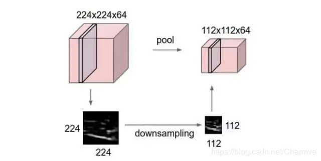
池化层用的方法有 Max pooling 和 average pooling，而实际用的较多的是 Max pooling。
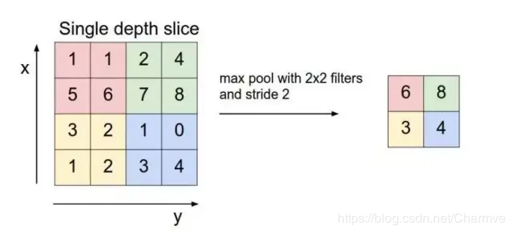
🌉 残差网络（ResNet）
ResNet，其全称为 Residual Network（残差网络），是一种深度学习的网络结构，由微软研究院的何凯明等人于 2015 年提出。ResNet 最大的创新在于引入了"残差模块"（Residual Block），有效地解决了深度神经网络训练中的梯度消失和表示瓶颈问题，使得网络的层数可以达到前所未有的深度，如 1000 层以上。
- 核心：残差模块的核心思想是通过引入跨层链接（skip connections），将输入直接传递到输出，从而形成一种"残差学习"的机制。这种设计允许反向传播的梯度直接流过整个网络，缓解了深度网络训练中的梯度消失问题。因为 ResNet 的出现，让深度学习从而变成了可能，真正的实现了深度的概念。
- 有效性：ResNet 在多个计算机视觉任务上取得了显著的性能提升，包括图像分类、目标检测和语义分割等，并成为了后续许多先进网络结构设计的基础。ResNet 的成功也促进了深度学习在更广泛领域的研究和应用，是深度学习发展史上的一个重要里程碑。在 2015 年的 ImageNet 图像识别挑战赛中，ResNet 取得了冠军，进一步证明了其有效性。
📜 提出背景
📈 梯度爆炸/梯度消失
$$ \begin{aligned} \because \delta^l_j &= \frac{\partial C}{\partial z^l_j} = \sum_k \frac{\partial C}{\partial z^{l+1}_k} \cdot \frac{\partial z^{l+1}_k}{\partial a^l_j} \cdot \frac{\partial a^l_j}{\partial z^l_j} \\ &= \sum_k \delta^{l+1}_k \cdot \frac{\partial (w^{l+1}_{kj} a^l_j + b^{l+1}_k)}{\partial a^l_j} \cdot \sigma'(z^l_j) \\ &= \sum_k \delta^{l+1}_k \cdot w^{l+1}_{kj} \cdot \sigma'(z^l_j) \\ \therefore \delta^l &= ((w^{l+1})^T \delta^{l+1}) \odot \sigma'(z^l) \end{aligned} $$首先一个很重要的原因就是当网络层数不断增加的时候，会很容易出现梯度爆炸与梯度消失的问题。因为我们更新网络的方式是通过反向传播的方式，其是通过链式求导的方式进行的，而当网络层数越深，连乘的项不断增多，所以这就是会导致很容易梯度爆炸或者梯度消失。就会导致靠近输入层的网络层，计算得到的偏导数极其大，更新后 $W$ 变成一个很大的数（爆炸）或者靠近输入层的网络层，计算得到的偏导数近乎零，$W$ 几乎无法得到更新。
解决方法：首先来看看为什么会梯度爆炸梯度消失，因为梯度要么过大所以一直乘导致爆炸，要么过小接近于 0，一直连乘导致消失。那么我们能不能通过控制梯度在一定的范围内变化，这样就不会出现梯度爆炸/梯度消失的现象呐。当然是可以的，首先可以将数据归一化进行处理，这样我们可以避免量纲不同带来的影响，其次对于神经网络的各层，我们可以通过加入 BN 层让每层的输入也现在在相同的范围内，通过这样的方式，我们可以有效的避免梯度爆炸/梯度消失。并且 ResNet 正是通过进行数据的归一化的 BN 层的设置来处理梯度爆炸与梯度消失的问题。
📉 退化现象
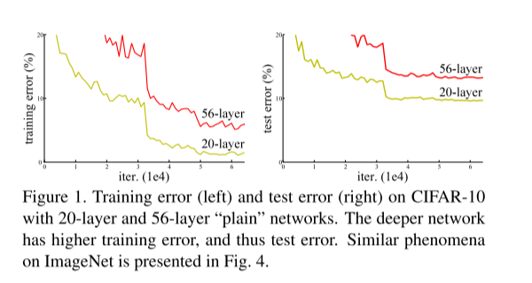
虽然我们通过数据的归一化的 BN 层的设置来处理梯度爆炸与梯度消失的问题，但是当网络加深的时候又会带来新的问题就是退化现象。什么是退化现象，就是通俗来说是网络性能的退化现象，可以理解为随着训练轮数（epoch）的增加，精度到达一定程度后，就开始下降了。可能有些同学会有疑问，会不会是因为出现了过拟合的现象呢？其实从图中可以清晰看出，如果出现过拟合的话就会导致训练的时候的误差会很小，测试的误差会很大，即过度的拟合了训练数据。但是我们看图，训练的时候的误差 56 层的也是大于 20 层的，所以这就不会是过拟合的现象。所以网络层数越深，训练误差越高，导致训练和测试效果变差，这一现象称为退化。
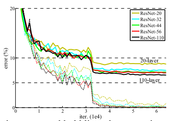
解决方法：如果我们仅仅单纯地增加神经网络的深度，可能会引发网络模型的退化，进而导致网络早期层所捕获的特征丢失。可以这样理解，假设在层数达到 40 层时，模型已经达到了最佳状态，但继续增加层数，由于激活函数和卷积等操作的影响，只会增强整个网络的非线性，从而使性能下降。
其根本原因在于，通过多个非线性层来近似一个恒等映射（即恒等函数，一种对任何元素映射后与原元素相同的函数）可能是困难的。为什么恒等映射难以实现呢？我们可以简单设想，随着网络层数的增加，网络学习到的是更高层次的语义特征，但在这一学习过程中，由于激活函数的特性，例如 ReLU 函数在输入小于零时输出为零，这就可能导致在加深网络的过程中不可避免地丢失低层语义信息。这样一来，最终学习到的网络可能并不符合数据的真实信息分布，从而导致网络性能不佳。
为了解决深层网络中的退化问题，可以采取一种策略，即让神经网络的某些层跳过与下一层神经元的直接连接，实现隔层相连，从而减弱每层之间的紧密联系。ResNet 论文中提出的残差结构（residual 结构）正是为了缓解这一问题。如下图所示，采用了残差结构的卷积网络在层数不断增加的情况下，性能并没有下降，反而有所提升。（图中虚线表示训练误差，实线表示测试误差）
💡 核心设计思想
传统深度神经网络通过堆叠卷积层提取特征，但随着层数增加，梯度在反向传播过程中逐渐衰减，导致深层网络难以训练。ResNet 通过引入残差连接（Residual Block），让网络学习残差函数（Residual function），而不是直接学习期望映射，允许梯度直接跨层传播，其核心公式为：
$$ y = F(x, {W_i}) + x $$其中，$x$ 为输入特征，$F(x, {W_i})$ 为残差函数（通常由卷积层 + 激活函数组成），$y$ 为输出。这种设计使得网络只需学习输入与输出之间的"残差"而非完整映射，降低了优化难度。
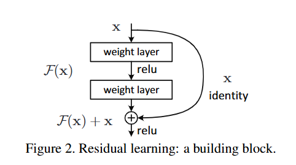
假设映射为 $F$，映射后的输出为 $H(x)$
如果不用残差的话，$H(x) = F(x)$。而在 ResNet 中
$$ H(x) = F(x) + x $$这样做的动机是，在反向传播更新参数的时候，不至于因为梯度为零而无法更新。且如果恒等映射是最优的，网络只需要学习 $F(x) = 0$ 的残差，避免了直接拟合复杂函数的难度。
🏛️ 网络结构
ResNet 中一共有两种不同的 ResNet Block。左边的用于浅层网络的 ResNet 叫做BasicBlock，右边的用于深层网络的 ResNet 叫做Bottleneck。
即将两个的卷积层替换为，它通过**$1 \times 1$ conv来巧妙地缩减或扩张 feature map 维度，从而使得我们的$1 \times 1$ conv**的 filters 数目不受上一层输入的影响，它的输出也不会影响到下一层。中间的卷积层首先在一个降维卷积层下减少了计算，然后在另一个的卷积层下做了还原。既保持了模型精度又减少了网络参数和计算量，节省了计算时间。
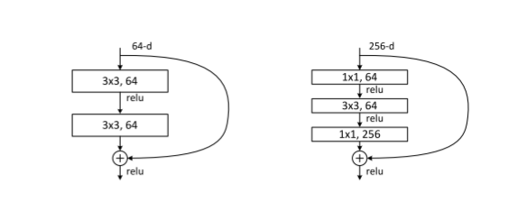